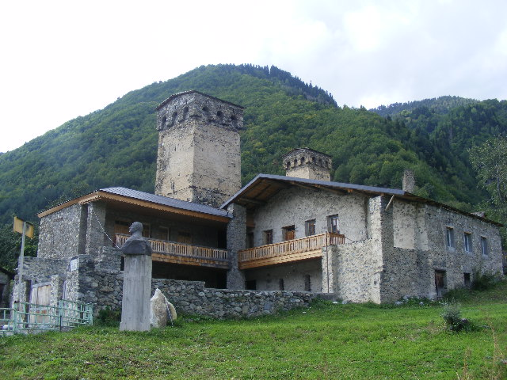
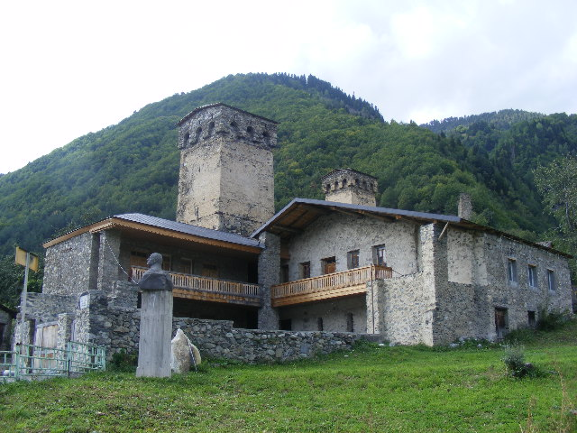
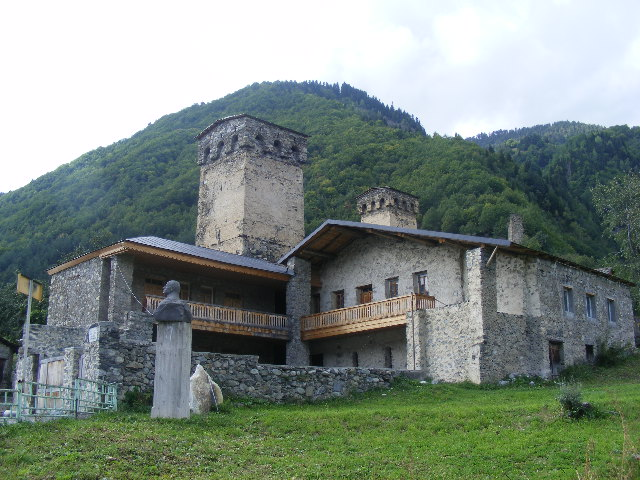
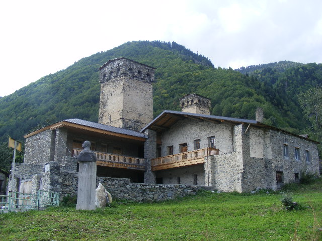

Mikheil Khergiani
 



Mountaineer & Rock climber. "Tiger of the Rocks"
Khergiani was born Chumlian Minan Khergiani in the village of Mestia,
in the historical province of Svaneti of the Georgian Soviet Socialist Republic.
His father, Vissarion Khergiani, was one of the first well-known Svan climbers.
He scaled the two-peaked Georgian mountain Ushba in 1937.
His uncle and cousin were also mountaineers, and the family introduced
Khergiani to the sport early in life.
After graduating from secondary school,
he attended the Soviet School of Mountaineering Instructors in 1951.
As his Russian climbing instructors could not pronounce Chumlian,
they renamed him Mikhail, which he retained as his legal name throughout adulthood.
In 1952, he and Shaliko Margiani shared the title of USSR Climbing Champion in Yalta.
In 1956, he was named a Champion of the USSR for ascending a rock face near the village of Tyutyu-Bashi.
He travelled to England in 1960 at the request of John Hunt, Baron Hunt,
leader of the 1953 British Mount Everest expedition. There, he was nicknamed the "Tiger of the Rocks".
In 1963, he was named an Honoured Master of Sport of the USSR. In 1964,
he ascended Ushba with a group of climbers and was again named USSR champion.
In 1966, he was given the Order of the Badge of Honour for outstanding achievements in sports.
In 1967 he was named International Master of Sports of the USSR and Honoured Coach of Sports of the Georgian SSR.
In the summer of 1969, Khergiani and a group of Soviet climbers including Vyacheslav Onishchenko and
Mikhail Anufrikov travelled to the Italian Alps for a series of climbs,
the last of which was the summit of Monte Civetta. During Khergiani's ascent of Monte Civetta,
a rockfall broke his rope. Khergiani did not have a secondary rope,
and plummeted approximately 600 m (2,000 ft) to his death.
He was buried in his home village of Mestia, where a museum dedicated to him now stands.
Khergiani's fame was such that after his death, songs were composed that described Dali,
the Svan cliff-dwelling goddess of the hunt, in mourning for him. In 1971,
the Khergiani Rock Climbing Prize was established in the Soviet Union in his honor,
and several peaks and climbing routes have been named for him.
Learn more about Mikheil Khergiani.